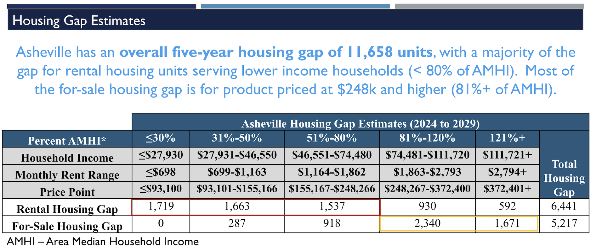

Asheville City Council - August 26th Meeting
September 2, 2025
Here’s what we found to be the most important housing-related items at Asheville’s City Council meeting of Tuesday, August 26, 2025.
The Latest Bowen Report
It’s not uncommon for presentations to be delivered at Asheville City Council meetings, unconnected with any vote or hearing. On this occasion, Bowen National Research had completed a major study of a four-county region in Western North Carolina, with Asheville at the center, and its housing needs.
Bowen has actually been employed to study Western North Carolina’s housing problems before, with previous studies in 2015, 2019, and 2021.
Patrick Bowen delivered the presentation to the council, limiting his time to a birds-eye view of the report, and focusing on the broad trends that were specific to Asheville. He noted for example, that vacancy rates for the city had improved somewhat for market-rate housing since 2021, though they are still not high enough to be considered “healthy.” He also noted that waitlists for income-restricted housing are still long, and vacancy rates are lowest for the apartments that serve the lowest income populations.
Several city councilors had good questions for Bowen, following the short presentation. You can watch it on the city’s YouTube channel here, with a later timestamp marking the start of council’s questions.
We just want to highlight one question from Mayor Manheimer that was an important reminder and clarification. She asked, in response to the slide shown below, “You have all these different buckets. How does it affect other buckets if you are adding housing stock in one bucket?”

Bowen’s response, which the mayor anticipated, was that yes, in fact, these things are interconnected. “If you [add] senior housing that would allow seniors to downsize,” for example, “they just freed up all this housing stock…that could be older…so…it might be more affordable.”
The point is that even if the greatest deficit—that is, the lowest vacancy rates—in Asheville’s housing stock is for homes that would serve populations earning below the area median income, and homes at this price point simply cannot be built in the city at today’s construction costs without generous public subsidies, freeing up existing older homes is one way to effectively add homes that people can afford. In fact, it’s likely the primary way that cheap homes have historically become available to working people in high-demand cities, and a very recent study confirms the phenomenon.
(A good analogy for this is how the used car market works.)
You can read the full (and very long) new Bowen Report here. You can also find Citizen Times coverage of the report itself here.
Conditional Zoning: 93 & 95 Springside Road
Outcome: Approved
Votes:
In favor: Esther E. Manheimer, Maggie Ullman, Sage Turner, S. Antanette Mosley, Sheneika Smith
Against: Kim Roney, Bo Hess
The one item on the night’s agenda that was both housing-related and up for a vote, this conditional zoning was for a very small number of homes, but it brought an outsized reaction to the council chamber.
The plan for thirty-five single-family homes on relatively small lots has been getting pushback since its two hearings at Asheville’s Planning and Zoning Commission in April and May. Just as with those meetings, a number of residents from near the project site showed up to speak against the project. The concerns expressed were somewhat standard for neighborhood opposition to new housing. They included concerns about too much density and too many new homes; as well as concerns that there was not enough affordable housing being offered. They included concerns that no below-market rentals were included (these are for-sale homes); as well as concerns that the for-sale homes might become rentals. They included concerns that the homes were too large and tailored to the upper end of the market; as well as concerns that the homes would be like little “file cabinets” for people.
Some of the individuals in opposition to the new development had been meeting with members of City Council in an attempt on the part of both parties for negotiations. The result was that aspects of the site plans did improve over the course of the last few months. The opposition group also had some “non-negotiables”—rather technical aspects, such as how wide a “buffer” strip of trees might be to the west of the site—and these became sticking points in the last minute negotiations that stretched on, even carrying on during the City Council meeting itself. We won’t recap the tortuous discussion here.
Rather we’ll offer just a couple of points that struck us:
First, it’s not uncommon for opponents of housing in their neighborhood to at once defend low-density status quo zoning, and at the same time criticize the project under review for being insufficient with respect to the latest gold standards of multifamily housing land use and building form. It seemed to us that this time, even the city staff’s messaging to City Council got in on the act. While city staff ultimately recommended approval for this project (as did the Planning and Zoning Commission), its memo to Council dinged the developers on the design for being too far in appearance from the low-density RS-4 pattern of more widely spaced single-family homes. At the same time, in its memo and its presentation that evening, staff appeared to also criticize the development for lacking forms such as townhomes that are characteristic of higher density and/or more “attainable” housing—even though townhomes are not a Permitted Use within RS-4 zoning per our city’s zoning code!
It is our opinion that the problem here ultimately should not be laid at the feet of the staff, but rather on our city’s zoning code itself. Having not been comprehensively revised since the 1990s, neither city staff nor project developers have any idea what the city’s current expectations and desires around residential land use really are. This sets the ground for confusion.
Second, we were rather struck by the opposition to building new homes near schools, as one of the neighborhood opposition’s biggest complaints appeared to be that there was too much traffic during school pickup time. Our response to this argument formed the basis of our July letter to City Council in support of the project, and you can read that letter here.
Very late into the night, City Council finally took a vote on the project. It was approved, with only Councilmembers Roney and Hess opposing in the end. We’ll state this again: while we believe conditional zonings are sometimes necessary and the outcomes often beneficial, and we are thankful for the council members that expressed a clear understanding of the need for these homes (and many more), and voted in favor of the project, we are in dire need of a reformed zoning code so that a measly thirty five homes can be built without such an exhausting process having to take place, and so that everyone involved in the process can share a clear set of expectations around land use that are tailored for the city’s twenty-first century needs and goals.